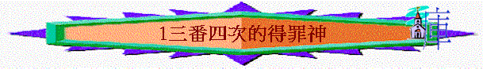

經文：摩1:1-2:3
先理解背景(1:1-2)
1.阿摩司書的作者是誰？ 他本身是有什麼工作？ 現在神要他作什麼特別工作或崗位？ 對我們有什麼提醒？
2.阿摩司書的時代，誰作王？
南國烏西雅,北國耶羅波安參考代下26:15，王下14:28，這兩個王的國勢如何？
人在安穩盛世下，通常最易出現的問題是什麼？
不覺自己有問題3.1:3提到「錫安」
, 「錫安」是什麼地方？「錫安」指耶路撒冷聖經提到神吼叫，有沒有聽到一些動物吼叫，令你很深刻的？
動物為何吼叫？
4.若神向人吼叫，代表什麼事情？
對人作出警告／向人發怒／準備攻勢人／呼喚人回轉 1:2提到人聽到吼叫後的結果是怎樣?～阿摩司書就是神對當時盛世的社會中，發出吼叫，神要向列國發出憤怒、警告與攻擊，也盼望喚醒他們，令他們回轉，他們究竟出現什麼問題，以致令神吼叫，至終會有什麼結果？我們會用六次查經作出查考，也成為我們生活中的提醒
一
.共通的問題1.1-2是神向列國作出吼叫及警告，而他們有什麼問題，我們可看一看1:3,1:6,1:9，有什麼共通字眼？
三番四次的犯罪2.有沒有見過一些朋友／同學／同事，三番四次的做了一些錯的事情，令你感無奈或氣憤，試分享。
二
.大馬色的問題(1:3-5)1.1:3提到什麼地方? 此地方是什麼國的首都？
大馬色是亞蘭的首都，亞蘭是現今的敍利亞2.「打糧的鐵器」，你猜想是什麼東西？
「打糧的鐵器」指打穀用的器具，底部有利齒3.1:3提到他們有什麼不好的地方? 若用「打糧的鐵器」攻打擊基利，表明他們在攻擊過程有什麼不好之處？
殘忍而無情4.1:4-5提到哈薛及便哈達，他們是亞蘭的君王，神怎樣對待他們？
5.今天我們未必會用武器殘忍的攻擊別人，但信徒又可以作什麼事情來無情地攻擊別人？ 你又有沒有見過這些事？
三
.推羅的問題(1:9-10)1.1:9又提到什麼地方？ 眾民指什麼人？ 以色列人
2.他們對以色列人有什麼不好的地方?
擄掠以色列及不記念 「弟兄的盟約」---你猜想兩國之間有什麼盟約? 友好或和平之約3.不念盟約有什麼問題？
不守信用，沒有誠信 神對推羅有什麼攻擊？ 在今天社會或生活中作什麼事等同不念盟約？
四
.以東的問題(1:11-12)1.1:11又提到什麼地方？「追趕兄弟」的兄弟指誰？
以掃與雅各原本是親兄弟，他們的後裔與----以東以色列可以算是兄弟2.他們怎對弟兄？ 有什麼不好的地方？
3.「永懷忿怒」，你猜想他們當初為何對以色列懷忿怒？
他們的祖先以掃被以色列的祖先雅各奪去了長子名份4.另1:12提到提幔和波斯拉，這兩地方是以東的大城，神怎對它們？
5.若有肢體對另一肢體常懷忿怒，你作為他身體的團友，你怎幫他？
五
.摩押的問題(2:1-3)1.2:1又提到那地方？
2.摩押有什麼問題？ 你猜想將人的骸骨焚燒成灰代表什麼事情？
古人以為焚燒骸骨可使死者的靈魂受苦，對當時近東的民族來說是奇恥大辱
3.前面也提及以東，你認為以東是好王嗎？ 將不好的王之骸骨焚燒成灰有什麼不妥的地方?
不尊重神所造的人，無論那人是怎樣不好，他也是神所造，王是神容許設立的，但摩押連死去的人也不尊重，也用此方式侮辱死去的人，對死去的人之仍不懷好意4.2:2又提到加略，加略是摩押的大城2:2-3神怎對待摩押？ 他們對別國的首領不好，神又怎樣的報應？
總結
1.大馬色、推羅、以東、摩押有什麼問題? 除了是三番四次得罪神外，他們有什麼共通的問題？
2.以上四個國家的問題，有否出現現今的社會中？ 對你來說，那一個國家的問題，你最深刻？ 試分享
祈禱